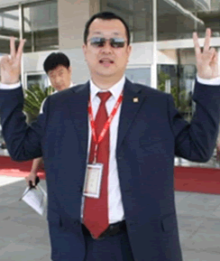

 |
| 人生格言：诚实做人，踏实做事。 |
| |
他，为了自己的梦想与追求，离开了自己熟悉并工作多年的寿险公司，加入到百年的大家庭中。
从入司开始，他就积极参与到部门中各项制度和流程的讨论与制定工作中，将自己多年保险公司的IT经验运用到百年的IT项目及规章制度的建设中。
在他的认真努力下，通过Quality Center工具，制定出了IT需求受理和BUG 处理的的流转过程以及一系列的配套使用工具。并通过他的积极沟通为各部门每周提供IT的开发计划，开发进度，BUG情况等各项资料，使各部门得到了IT部的强大后援支持。
他踏实稳健的工作作风，以及多年保险系统开发经验为IT部门的流程设置、制度建设及百年核心系统的建设做出了突出贡献。既贯彻了IT部“服务”的思想，又彰显出“专业”的品质。 |
|
|